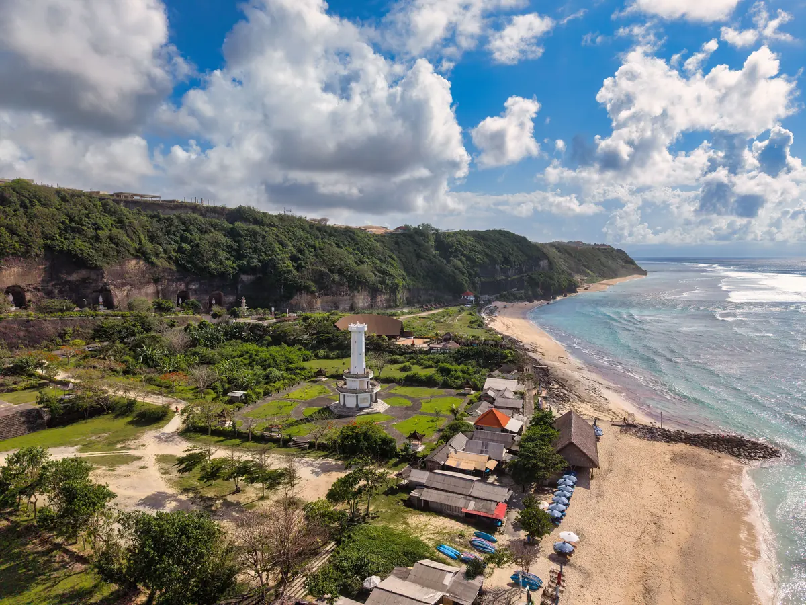

What You'll Do

Stop 1
Garuda Wisnu Kencana (GWK)
One of the tallest statues on earth - Lord Vishnu riding the mythical Garuda, standing 121 metres above a limestone cultural park. Taller than the Statue of Liberty, and it took 28 years to finish. Impressive up close in a way photos never quite capture.

Stop 2
Pandawa Beach
Once called "Secret Beach" because it was hidden behind a limestone ridge, now reached through a dramatic cut in the cliff lined with giant carved statues. Calm water, wide sand, and space to actually breathe. A good swim stop before heading back.